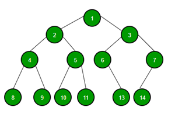

Thuật toán Heap Sort được chia làm hai phần là xây dựng Max Heap và sắp xếp.
Heap là cây nhị phân hoàn chỉnh.
Cây nhị phân hoàn chỉnh là cấu trúc cây nhị phân hoàn hảo nhưng trừ mức cuối, ở mức cuối các node lá dồn hết qua trái càng xa càng tốt.
Hai phần tử con của một phần tử a[i] bất kỳ sẽ nằm ở vị trí 2i + 1 và 2i + 2 (nếu phần tử đầu là 0) hoặc 2i và 2i + 1 (nếu phần tử đầu là 1). Các phần tử này gọi là các phần tử liên đới. Các số đánh trong hình trên chính là vị trí index của các phần tử khi thể hiện dưới dạng mảng. Nếu duyệt cây theo các mức (Level Order Traversal), ta sẽ thu được một danh sách tăng dần các vị trí index từ 1 đến n (hoặc từ 0 đến n – 1).
Vun đống (Heapify) là một thao tác kiểm tra xem node đang xét có giá trị lớn hơn giá trị của node con nó hay chưa. Chúng ta sẽ hoán vị một phần tử với node con của nó nếu giá trị của node đó bé hơn node con. Và nếu cả hai node con đều lớn hơn, ta sẽ hoán vị với node con lớn nhất.
Max Heap là một heap sao cho các node đều lớn hơn các node con của nó. Có thể có hai node bằng nhau trong trường hợp Max Heap sử dụng cho thuật toán. Để xây dựng Max Heap, ta sẽ vun đống từ giữa mảng. Ta không cần phải đi xây dựng một cấu trúc cây nhị phân trừu tượng mà sẽ thao tác trực tiếp trên mảng dữ liệu đầu vào.
Giả sử ta cần xây dựng Max Heap từ mảng dưới đây

Phần tử xét vun đống là giữa mảng, có vị trí index là i = int(5 - 1)/2 = 2 hoặc i = 6/2 - 1 = 2.
Bước đầu tiên là swap(9,10) vì 10 lớn hơn 9.

Các phần tử bị hoán vị phải được vun đống ở vị trí mà nó hoán vị đến. Việc này để đảm bảo các node luôn có giá trị lớn hơn node con của nó sau khi có sự thay đổi gây ra bởi công việc hoán vị. Ở trên do arr[5] là node lá nên không có gì xảy ra.
Sau khi xét arr[2] thì ta tiếp tục xét arr[1] (cứ thế tiến dần về đầu mảng).

Nhận thấy node này đã được vun đống sẵn rồi nên bỏ qua và xét arr[0].

Ở đây ta thấy 12 > 10 > 1 nên ta sẽ swap(12,1). Sau đó xét vun đống ở arr[1], nơi mà ta vừa thực hiện hoán vị để bảo toàn Max Heap. Tại arr[1] ta thấy 6 > 5 > 1, thực hiện swap(6,1) và xét arr[4] ở bước tiếp theo. Node arr[4] là node lá nên không có gì xảy ra, ta thu được Max Heap hoàn chỉnh.
(Hình ảnh tham khảo từ programmingquiz)
Tổng quát hóa cho quá trình xây dựng Max Heap:
Sau khi xây dựng được Max Heap, ta sẽ lặp lại quá trình sắp xếp n lần như sau:
Heap Sort là một thuật toán cải tiến của Selection Sort. Nhờ sử dụng cấu trúc Heap mà Heap Sort có số lần so sánh ít hơn Selection, nó chỉ tốn O(nlog(n)) chi phí so sánh.
Heap Sort dựa vào việc so sánh để sắp xếp. Và sự so sánh này trên cấu trúc Heap không bị ảnh hưởng bởi kiểu dữ liệu (int, float, bool, char,...). Ngoài ra, đối với chuỗi ký tự, còn có Dictionary - based ?. Ứng dụng trong Priority Queues ?.
Ví dụ: "been" > "ant", "been" < "boy", "Been" < "been".
Điểm mạnh
Điểm yếu
Khi nào nên sử dụng?
Ta đã biết chiều cao của cây nhị phân có n nodes là $log_2(n)$. Để vun đống tại node bất kỳ thì thuật toán luôn phải so sánh nó với hai node con. Việc so sánh này sẽ đào sâu đến khi nào chạm node lá, nên chi phí cho việc so sánh sẽ là $O(log_2(n))$.
Trường hợp tốt nhất thì Max Heap đã được xây dựng, không tồn tại bất kỳ phép hoán vị nào, xấu nhất là khi phải đẩy phần tử đang xét vun đống đến tận node lá, tốn $log_2(n)$ lần hoán vị.
Trong bước build Max Heap thì cần xét vun đống cho n/2 phần tử, do đó tổng chi phí trong bước này là $O(\frac{n}{2}*log_2(n)) \sim O(nlog_2(n))$.
Thực tế, bước build Max Heap có độ phức tạp là O(n), nhưng do không ảnh hưởng đến tổng độ phức tạp nên không cần đi sâu. Có thể xem ở đây.
Ở bước sắp xếp, mỗi lần sắp xếp cũng cần build Max Heap, tốn chi phí $log_2(n)$ để thực hiện phép so sánh, trường hợp xấu nhất thì số phép hoán vị cũng là $log_2(n)$. Và ta thực hiện việc sắp xếp này cho n - 1 phần tử (phần tử cuối cùng mặc định đã được sắp). Do đó chi phí của bước sắp xếp sẽ là $O(nlog_2(n))$.
Do hai bước này thực hiện liền kề nhau, tổng chi phí cho thuật toán là $O(nlog_2(n))$.
Tương tự như Merge Sort, cả ba cases của thuật toán đều có chi phí như nhau là $O(nlog_2(n))$.
Đối với dữ liệu đã sắp xếp (tăng dần hoặc giảm dần), thì Heap Sort có tốc độ nhanh hơn thông thường.
Dễ hiểu thì khi dữ liệu giảm dần thì nó đã là Max Heap. Còn trong trường hợp tăng dần thì nó là Min Heap. Do đó chỉ tốn chi phí $O(n)$ để build Heap. Tuy nhiên, chi phí cuối cùng vẫn là $O(nlog_2(n))$.
Mặc dù vậy, máy tính có thể tối ưu thời gian thuật toán của Heap Sort dựa vào branch prediction nếu dữ liệu đã được sắp xếp. Đại loại là ở mỗi lần thực hiện phép so sánh, kết quả đều giống nhau, nên máy tính có thể dự đoán được kết quả của lần tiếp theo và thực hiện tối ưu. ?
(Tham khảo programmingquiz và happycoders)
| Cases | Complexity |
|---|---|
| Best case | $O(nlog_2(n))$ |
| Worst case | $O(nlog_2(n))$ |
| Average case | $O(nlog_2(n))$ |
Space Complexity: $O(1)$.
void heapify(int* arr, int n, int i)
{
int largest = i; // Khởi tạo phần tử lớn nhất tại i
int l = 2 * i + 1; // left = 2*i + 1
int r = 2 * i + 2; // right = 2*i + 2
if (l < n && arr[l] > arr[largest])
largest = l;
if (r < n && arr[r] > arr[largest])
largest = r;
if (largest != i) {
swap(arr[i], arr[largest]);
heapify(arr, n, largest);
}
}
void heapSort(int* arr, int n)
{
// Xây dựng heap từ giữa mảng đến đầu mảng
for (int i = n / 2 - 1; i >= 0; i--)
heapify(arr, n, i);
// Sắp xếp
for (int i = n - 1; i > 0; i--) {
// Chuyển phần tử root về phần mảng đã được sắp xếp
swap(arr[0], arr[i]);
// Tái xây dựng Max Heap ở phần tử root mới
heapify(arr, i, 0);
}
}
Có một biến thể của Heap Sort gọi là Bottom - Up Heap Sort, được tinh chỉnh phần build Max Heap để giảm số lần so sánh so với Heap Sort thông thường.